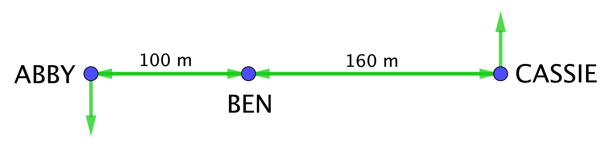
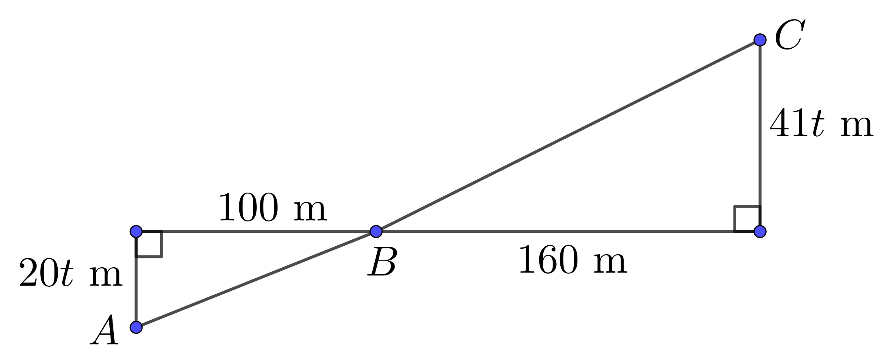
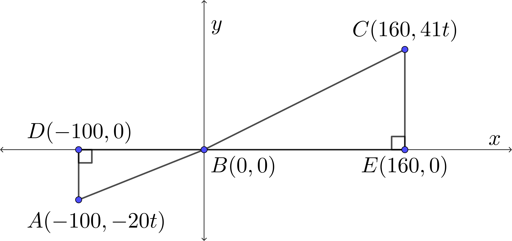

Problem
At noon three students, Abby, Ben, and Cassie, are standing so that Abby is \(100\) m west of Ben and Cassie is \(160\) m east of Ben. While Ben stays in his initial position, Abby begins walking south at a constant rate of \(20\) m/min and Cassie begins walking north at a constant rate of \(41\) m/min.
In how many minutes will the distance between Cassie and Ben be the twice the distance between Abby and Ben?

Solution
Solution 1
Let \(t\) represent the number of minutes until Cassie’s distance to Ben is twice that of Abby’s distance to Ben. In \(t\) minutes Abby will walk \(20t\) m and Cassie will walk \(41t\) m. The following diagram contains the information showing Abby’s position, \(A\), Ben’s position, \(B\), and Cassie’s position, \(C\), at time \(t>0\).

Since both triangles in the diagram are right-angled triangles, we can use the Pythagorean Theorem to set up an equation.
\[\begin{aligned} CB&=2AB\\ (CB)^2&=\left(2AB\right)^2\\ (CB)^2&=4\left(AB\right)^2\\ (41t)^2+(160)^2&=4\left[(20t)^2+(100)^2\right]\\ 1681t^2+25600&=4\left[400t^2+10000\right]\\ 1681t^2+25600&=1600t^2+40000\\ 81t^2&=14400\\ t^2&=\frac{14400}{81}\\ t&=\frac{120}{9} & (\text{since }t>0)\\ t&=\frac{40}{3}\text{ min}\end{aligned}\]
Therefore, in \(13\frac{1}{3}\) minutes (\(13\) minutes \(20\) seconds), Cassie’s distance to Ben will be twice that of Abby’s distance to Ben.
In Solution 2, an alternate solution that uses coordinate geometry is presented.
Solution 2
Represent Abby, Ben and Cassie’s respective positions at noon as points on the \(x\)-axis so that Ben is positioned at the origin \(B(0,0)\), Abby is positioned \(100\) units left of Ben at \(D(-100,0)\) and Cassie is positioned \(160\) units right of Ben at \(E(160,0)\).
Let \(t\) represent the number of minutes until Cassie’s distance to Ben is twice that of Abby’s distance to Ben.
In \(t\) minutes Abby will walk south \(20t\) m to the point \(A(-100,-20t)\). In \(t\) minutes Cassie will walk north \(41t\) m to the point \(C(160,41t)\).

The distance from a point \(P(x,y)\) to the origin can be found using the formula \(d=\sqrt{x^2+y^2}\).
Then \(AB=\sqrt{(-100)^2+(-20t)^2}=\sqrt{10000+400t^2}\) and \(CB=\sqrt{(160)^2+(41t)^2}=\sqrt{25600+1681t^2}\). \[\begin{aligned} CB&=2AB\\ \sqrt{25600+1681t^2}&=2\sqrt{10000+400t^2}\\ 25600+1681t^2&=4(10000+400t^2) & \text{(squaring both sides)}\\ 25600+1681t^2&=40000+1600t^2\\ 81t^2&=14400\\ t^2&=\frac{14400}{81}\\ t&=\frac{120}{9} & (\text{since } t>0)\\ t&=\frac{40}{3} \text{ min}\end{aligned}\] Therefore, in \(13\frac{1}{3}\) minutes (\(13\) minutes \(20\) seconds), Cassie’s distance to Ben will be twice that of Abby’s distance to Ben.